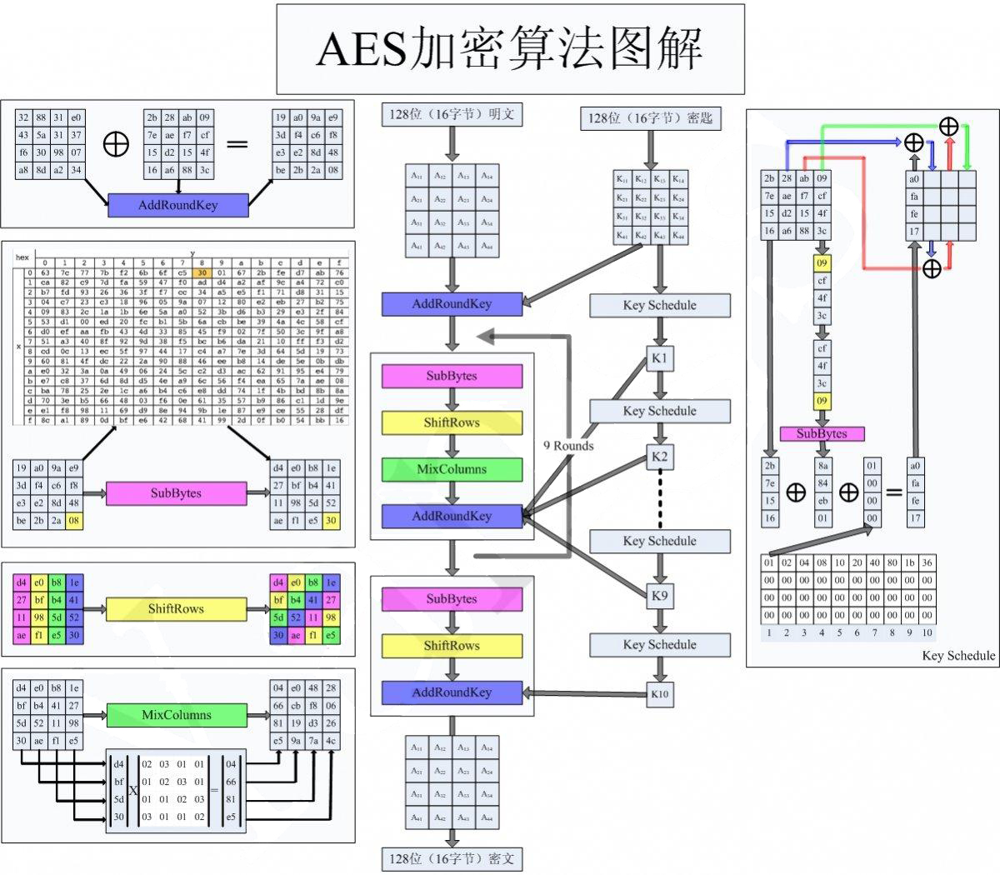

AES
算法
-
输入：128bit
-
输出：128bit
-
密钥长度与迭代轮数有关
加解密流程：
每一轮主要包括：
- 轮密钥加，AddRoundKey：将128位轮密钥Ki同状态矩阵中的数据进行逐位异或操作
- 字节替换，SubBytes：查表S盒。把字节的高4位作为行值（0），低4位作为列值（8），取出S盒或者逆S盒中对应的元素（30）作为输出
- 行移位，ShiftRows：简单的左循环移位。当密钥长度为128比特时，状态矩阵的第0行左移0字节，第1行左移1字节，第2行左移2字节，第3行左移3字节
- 列混淆，MixColumns：经行移位后的状态矩阵与固定的矩阵相乘，得到混淆后的状态矩阵。其中，矩阵元素的乘法和加法都是定义在基于GF(2^8)上的二元运算。
b(x)=a(x)c(x)mod(x4+1)其中c(x)=03x3+01x2+01x+02c(x)与x4+1互素，保证存在逆多项式d(x)，满足c(x)d(x)=1mod(x4+1)。只有逆多项式d(x)存在，才能正确进行解密
密钥扩展：
-
首先将初始密钥输入到一个4*4的状态矩阵，每一列的4个字节组成一个字，依次为w[0],w[1],w[2],w[3]
-
接着，对W数组扩充40个新列，构成总共44列的扩展密钥数组。新列i的产生方式如下
i不是4的倍数w[i]=w[i−4] xor w[i−1]i是4的倍数w[i]=w[i−4] xor T(w[i−1])
其中函数T由以下三部分组成：
- 字循环：将1个字中的4个字节循环左移1个字节
- 字节代换：对字循环的结果使用S盒进行字节代换
- 轮常量异或：将前两步的结果与轮常量Rcon[j]异或，其中j表示轮数
比如上述初始密钥
w[0]:2b 7e 15 16w[1]:28 ae d2 a6w[2]:ab f7 15 88w[3]:09 cf 4f 3c求扩展的第一轮的子密钥w[4],w[5],w[6],w[7]w[4]=w[0]xorT(w[3])T(w[3])计算过程如下：1.w[3]循环左移1个字节得到cf 4f 3c 092.字节代换得到8a 84 eb 013.与轮常量异或再与w[0]异或最后得到a0 fa fe 17
signature
signature定义用到快速软件实现——查表法。将行移位、列混合和S盒结合得到4个4bytes*256项的查找表（T盒）。
列变换中，
将其按列向量拆开，对于每一列，都有：
所以得到：其中Wk0为本轮子密钥ki中对应的4字节
T盒定义为
所以轮操作变为：
根据上述理论，预定义的结构如下
测试
AES_encrypt
1
2
3
4
5
6
7
8
9
10
11
12
13
14
15
16
17
18
19
20
21
22
23
24
25
26
27
28
29
30
31
32
33
34
35
36
37
38
39
40
41
42
43
44
45
46
47
48
49
50
51
52
53
54
55
56
57
58
59
60
61
62
63
64
65
66
67
68
69
70
71
72
73
74
75
76
77
78
79
80
81
82
83
84
85
86
87
88
89
90
91
92
93
94
95
96
97
98
99
100
101
102
103
104
105
106
107
108
109
110
111
112
113
114
115
116
117
118
119
120
121
122
123
124
125
126
127
128
129
130
131
132
133
134
135
136
137
138
139
140
141
142
143
144
145
146
147
148
149
150
151
152
153
154
155
156
157
158
159
160
161
162
163
164
165
166
167
168
169
170
171
172
173
174
175
176
177
178
179
180
181
182
183
184
185
186
187
188
189
190
| void AES_encrypt(const unsigned char *in, unsigned char *out,
const AES_KEY *key) {
const u32 *rk;
u32 s0, s1, s2, s3, t0, t1, t2, t3;
#ifndef FULL_UNROLL
int r;
#endif
assert(in && out && key);
rk = key->rd_key;
s0 = GETU32(in ) ^ rk[0];
s1 = GETU32(in + 4) ^ rk[1];
s2 = GETU32(in + 8) ^ rk[2];
s3 = GETU32(in + 12) ^ rk[3];
#ifdef FULL_UNROLL
t0 = Te0[s0 >> 24] ^ Te1[(s1 >> 16) & 0xff] ^ Te2[(s2 >> 8) & 0xff] ^ Te3[s3 & 0xff] ^ rk[ 4];
t1 = Te0[s1 >> 24] ^ Te1[(s2 >> 16) & 0xff] ^ Te2[(s3 >> 8) & 0xff] ^ Te3[s0 & 0xff] ^ rk[ 5];
t2 = Te0[s2 >> 24] ^ Te1[(s3 >> 16) & 0xff] ^ Te2[(s0 >> 8) & 0xff] ^ Te3[s1 & 0xff] ^ rk[ 6];
t3 = Te0[s3 >> 24] ^ Te1[(s0 >> 16) & 0xff] ^ Te2[(s1 >> 8) & 0xff] ^ Te3[s2 & 0xff] ^ rk[ 7];
s0 = Te0[t0 >> 24] ^ Te1[(t1 >> 16) & 0xff] ^ Te2[(t2 >> 8) & 0xff] ^ Te3[t3 & 0xff] ^ rk[ 8];
s1 = Te0[t1 >> 24] ^ Te1[(t2 >> 16) & 0xff] ^ Te2[(t3 >> 8) & 0xff] ^ Te3[t0 & 0xff] ^ rk[ 9];
s2 = Te0[t2 >> 24] ^ Te1[(t3 >> 16) & 0xff] ^ Te2[(t0 >> 8) & 0xff] ^ Te3[t1 & 0xff] ^ rk[10];
s3 = Te0[t3 >> 24] ^ Te1[(t0 >> 16) & 0xff] ^ Te2[(t1 >> 8) & 0xff] ^ Te3[t2 & 0xff] ^ rk[11];
t0 = Te0[s0 >> 24] ^ Te1[(s1 >> 16) & 0xff] ^ Te2[(s2 >> 8) & 0xff] ^ Te3[s3 & 0xff] ^ rk[12];
t1 = Te0[s1 >> 24] ^ Te1[(s2 >> 16) & 0xff] ^ Te2[(s3 >> 8) & 0xff] ^ Te3[s0 & 0xff] ^ rk[13];
t2 = Te0[s2 >> 24] ^ Te1[(s3 >> 16) & 0xff] ^ Te2[(s0 >> 8) & 0xff] ^ Te3[s1 & 0xff] ^ rk[14];
t3 = Te0[s3 >> 24] ^ Te1[(s0 >> 16) & 0xff] ^ Te2[(s1 >> 8) & 0xff] ^ Te3[s2 & 0xff] ^ rk[15];
s0 = Te0[t0 >> 24] ^ Te1[(t1 >> 16) & 0xff] ^ Te2[(t2 >> 8) & 0xff] ^ Te3[t3 & 0xff] ^ rk[16];
s1 = Te0[t1 >> 24] ^ Te1[(t2 >> 16) & 0xff] ^ Te2[(t3 >> 8) & 0xff] ^ Te3[t0 & 0xff] ^ rk[17];
s2 = Te0[t2 >> 24] ^ Te1[(t3 >> 16) & 0xff] ^ Te2[(t0 >> 8) & 0xff] ^ Te3[t1 & 0xff] ^ rk[18];
s3 = Te0[t3 >> 24] ^ Te1[(t0 >> 16) & 0xff] ^ Te2[(t1 >> 8) & 0xff] ^ Te3[t2 & 0xff] ^ rk[19];
t0 = Te0[s0 >> 24] ^ Te1[(s1 >> 16) & 0xff] ^ Te2[(s2 >> 8) & 0xff] ^ Te3[s3 & 0xff] ^ rk[20];
t1 = Te0[s1 >> 24] ^ Te1[(s2 >> 16) & 0xff] ^ Te2[(s3 >> 8) & 0xff] ^ Te3[s0 & 0xff] ^ rk[21];
t2 = Te0[s2 >> 24] ^ Te1[(s3 >> 16) & 0xff] ^ Te2[(s0 >> 8) & 0xff] ^ Te3[s1 & 0xff] ^ rk[22];
t3 = Te0[s3 >> 24] ^ Te1[(s0 >> 16) & 0xff] ^ Te2[(s1 >> 8) & 0xff] ^ Te3[s2 & 0xff] ^ rk[23];
s0 = Te0[t0 >> 24] ^ Te1[(t1 >> 16) & 0xff] ^ Te2[(t2 >> 8) & 0xff] ^ Te3[t3 & 0xff] ^ rk[24];
s1 = Te0[t1 >> 24] ^ Te1[(t2 >> 16) & 0xff] ^ Te2[(t3 >> 8) & 0xff] ^ Te3[t0 & 0xff] ^ rk[25];
s2 = Te0[t2 >> 24] ^ Te1[(t3 >> 16) & 0xff] ^ Te2[(t0 >> 8) & 0xff] ^ Te3[t1 & 0xff] ^ rk[26];
s3 = Te0[t3 >> 24] ^ Te1[(t0 >> 16) & 0xff] ^ Te2[(t1 >> 8) & 0xff] ^ Te3[t2 & 0xff] ^ rk[27];
t0 = Te0[s0 >> 24] ^ Te1[(s1 >> 16) & 0xff] ^ Te2[(s2 >> 8) & 0xff] ^ Te3[s3 & 0xff] ^ rk[28];
t1 = Te0[s1 >> 24] ^ Te1[(s2 >> 16) & 0xff] ^ Te2[(s3 >> 8) & 0xff] ^ Te3[s0 & 0xff] ^ rk[29];
t2 = Te0[s2 >> 24] ^ Te1[(s3 >> 16) & 0xff] ^ Te2[(s0 >> 8) & 0xff] ^ Te3[s1 & 0xff] ^ rk[30];
t3 = Te0[s3 >> 24] ^ Te1[(s0 >> 16) & 0xff] ^ Te2[(s1 >> 8) & 0xff] ^ Te3[s2 & 0xff] ^ rk[31];
s0 = Te0[t0 >> 24] ^ Te1[(t1 >> 16) & 0xff] ^ Te2[(t2 >> 8) & 0xff] ^ Te3[t3 & 0xff] ^ rk[32];
s1 = Te0[t1 >> 24] ^ Te1[(t2 >> 16) & 0xff] ^ Te2[(t3 >> 8) & 0xff] ^ Te3[t0 & 0xff] ^ rk[33];
s2 = Te0[t2 >> 24] ^ Te1[(t3 >> 16) & 0xff] ^ Te2[(t0 >> 8) & 0xff] ^ Te3[t1 & 0xff] ^ rk[34];
s3 = Te0[t3 >> 24] ^ Te1[(t0 >> 16) & 0xff] ^ Te2[(t1 >> 8) & 0xff] ^ Te3[t2 & 0xff] ^ rk[35];
t0 = Te0[s0 >> 24] ^ Te1[(s1 >> 16) & 0xff] ^ Te2[(s2 >> 8) & 0xff] ^ Te3[s3 & 0xff] ^ rk[36];
t1 = Te0[s1 >> 24] ^ Te1[(s2 >> 16) & 0xff] ^ Te2[(s3 >> 8) & 0xff] ^ Te3[s0 & 0xff] ^ rk[37];
t2 = Te0[s2 >> 24] ^ Te1[(s3 >> 16) & 0xff] ^ Te2[(s0 >> 8) & 0xff] ^ Te3[s1 & 0xff] ^ rk[38];
t3 = Te0[s3 >> 24] ^ Te1[(s0 >> 16) & 0xff] ^ Te2[(s1 >> 8) & 0xff] ^ Te3[s2 & 0xff] ^ rk[39];
if (key->rounds > 10) {
s0 = Te0[t0 >> 24] ^ Te1[(t1 >> 16) & 0xff] ^ Te2[(t2 >> 8) & 0xff] ^ Te3[t3 & 0xff] ^ rk[40];
s1 = Te0[t1 >> 24] ^ Te1[(t2 >> 16) & 0xff] ^ Te2[(t3 >> 8) & 0xff] ^ Te3[t0 & 0xff] ^ rk[41];
s2 = Te0[t2 >> 24] ^ Te1[(t3 >> 16) & 0xff] ^ Te2[(t0 >> 8) & 0xff] ^ Te3[t1 & 0xff] ^ rk[42];
s3 = Te0[t3 >> 24] ^ Te1[(t0 >> 16) & 0xff] ^ Te2[(t1 >> 8) & 0xff] ^ Te3[t2 & 0xff] ^ rk[43];
t0 = Te0[s0 >> 24] ^ Te1[(s1 >> 16) & 0xff] ^ Te2[(s2 >> 8) & 0xff] ^ Te3[s3 & 0xff] ^ rk[44];
t1 = Te0[s1 >> 24] ^ Te1[(s2 >> 16) & 0xff] ^ Te2[(s3 >> 8) & 0xff] ^ Te3[s0 & 0xff] ^ rk[45];
t2 = Te0[s2 >> 24] ^ Te1[(s3 >> 16) & 0xff] ^ Te2[(s0 >> 8) & 0xff] ^ Te3[s1 & 0xff] ^ rk[46];
t3 = Te0[s3 >> 24] ^ Te1[(s0 >> 16) & 0xff] ^ Te2[(s1 >> 8) & 0xff] ^ Te3[s2 & 0xff] ^ rk[47];
if (key->rounds > 12) {
s0 = Te0[t0 >> 24] ^ Te1[(t1 >> 16) & 0xff] ^ Te2[(t2 >> 8) & 0xff] ^ Te3[t3 & 0xff] ^ rk[48];
s1 = Te0[t1 >> 24] ^ Te1[(t2 >> 16) & 0xff] ^ Te2[(t3 >> 8) & 0xff] ^ Te3[t0 & 0xff] ^ rk[49];
s2 = Te0[t2 >> 24] ^ Te1[(t3 >> 16) & 0xff] ^ Te2[(t0 >> 8) & 0xff] ^ Te3[t1 & 0xff] ^ rk[50];
s3 = Te0[t3 >> 24] ^ Te1[(t0 >> 16) & 0xff] ^ Te2[(t1 >> 8) & 0xff] ^ Te3[t2 & 0xff] ^ rk[51];
t0 = Te0[s0 >> 24] ^ Te1[(s1 >> 16) & 0xff] ^ Te2[(s2 >> 8) & 0xff] ^ Te3[s3 & 0xff] ^ rk[52];
t1 = Te0[s1 >> 24] ^ Te1[(s2 >> 16) & 0xff] ^ Te2[(s3 >> 8) & 0xff] ^ Te3[s0 & 0xff] ^ rk[53];
t2 = Te0[s2 >> 24] ^ Te1[(s3 >> 16) & 0xff] ^ Te2[(s0 >> 8) & 0xff] ^ Te3[s1 & 0xff] ^ rk[54];
t3 = Te0[s3 >> 24] ^ Te1[(s0 >> 16) & 0xff] ^ Te2[(s1 >> 8) & 0xff] ^ Te3[s2 & 0xff] ^ rk[55];
}
}
rk += key->rounds << 2;
#else
r = key->rounds >> 1;
for (;;) {
t0 =
Te0[(s0 >> 24) ] ^
Te1[(s1 >> 16) & 0xff] ^
Te2[(s2 >> 8) & 0xff] ^
Te3[(s3 ) & 0xff] ^
rk[4];
t1 =
Te0[(s1 >> 24) ] ^
Te1[(s2 >> 16) & 0xff] ^
Te2[(s3 >> 8) & 0xff] ^
Te3[(s0 ) & 0xff] ^
rk[5];
t2 =
Te0[(s2 >> 24) ] ^
Te1[(s3 >> 16) & 0xff] ^
Te2[(s0 >> 8) & 0xff] ^
Te3[(s1 ) & 0xff] ^
rk[6];
t3 =
Te0[(s3 >> 24) ] ^
Te1[(s0 >> 16) & 0xff] ^
Te2[(s1 >> 8) & 0xff] ^
Te3[(s2 ) & 0xff] ^
rk[7];
rk += 8;
if (--r == 0) {
break;
}
s0 =
Te0[(t0 >> 24) ] ^
Te1[(t1 >> 16) & 0xff] ^
Te2[(t2 >> 8) & 0xff] ^
Te3[(t3 ) & 0xff] ^
rk[0];
s1 =
Te0[(t1 >> 24) ] ^
Te1[(t2 >> 16) & 0xff] ^
Te2[(t3 >> 8) & 0xff] ^
Te3[(t0 ) & 0xff] ^
rk[1];
s2 =
Te0[(t2 >> 24) ] ^
Te1[(t3 >> 16) & 0xff] ^
Te2[(t0 >> 8) & 0xff] ^
Te3[(t1 ) & 0xff] ^
rk[2];
s3 =
Te0[(t3 >> 24) ] ^
Te1[(t0 >> 16) & 0xff] ^
Te2[(t1 >> 8) & 0xff] ^
Te3[(t2 ) & 0xff] ^
rk[3];
}
#endif
s0 =
(Te2[(t0 >> 24) ] & 0xff000000) ^
(Te3[(t1 >> 16) & 0xff] & 0x00ff0000) ^
(Te0[(t2 >> 8) & 0xff] & 0x0000ff00) ^
(Te1[(t3 ) & 0xff] & 0x000000ff) ^
rk[0];
PUTU32(out , s0);
s1 =
(Te2[(t1 >> 24) ] & 0xff000000) ^
(Te3[(t2 >> 16) & 0xff] & 0x00ff0000) ^
(Te0[(t3 >> 8) & 0xff] & 0x0000ff00) ^
(Te1[(t0 ) & 0xff] & 0x000000ff) ^
rk[1];
PUTU32(out + 4, s1);
s2 =
(Te2[(t2 >> 24) ] & 0xff000000) ^
(Te3[(t3 >> 16) & 0xff] & 0x00ff0000) ^
(Te0[(t0 >> 8) & 0xff] & 0x0000ff00) ^
(Te1[(t1 ) & 0xff] & 0x000000ff) ^
rk[2];
PUTU32(out + 8, s2);
s3 =
(Te2[(t3 >> 24) ] & 0xff000000) ^
(Te3[(t0 >> 16) & 0xff] & 0x00ff0000) ^
(Te0[(t1 >> 8) & 0xff] & 0x0000ff00) ^
(Te1[(t2 ) & 0xff] & 0x000000ff) ^
rk[3];
PUTU32(out + 12, s3);
}
|
可以从图中很明显看出符合signature的特征

)